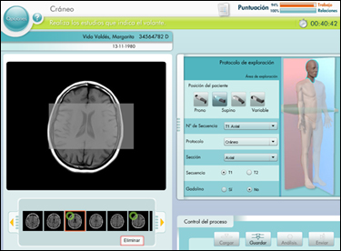

| Selección de las imágenes más significativas que deben ser impresas en película radiográfica o enviadas a radiología |
|
| Las imágenes adquiridas deben almacenarse en un sistema de archivo.
Desde ahí es posible recuperarlas y modificarlas, imprimirlas en papel fotográfico o enviarlas a un sistema paralelo en red desde el cual podrán acceder los médicos encargados de la interpretación de las mismas. |
|
 |
|
Pero no todas las imágenes serán adecuadas.
Es preciso que el técnico revise las imágenes recogidas y valore la calidad de las mismas. Es posible que se hayan producido artefactos de movimiento del paciente, se hayan interpuesto estructuras delante del arco que modifiquen la imagen y provoquen confusión, no se haya logrado el suficiente nivel de contraste de las estructuras con gadolinio, etc.
De ahí que el técnico debe decidir si el estudio es correcto o es necesario solicitar la repetición del estudio. |
|
| » Volver |